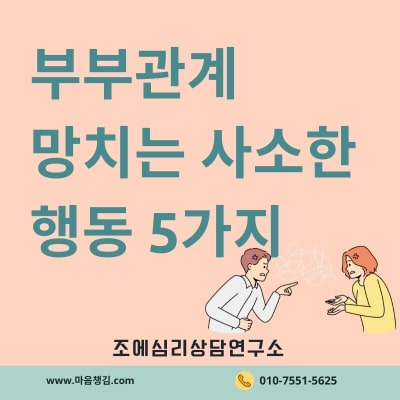
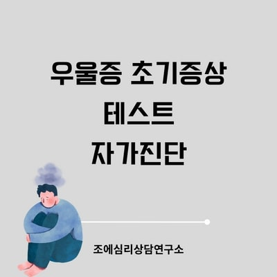
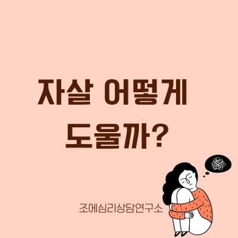
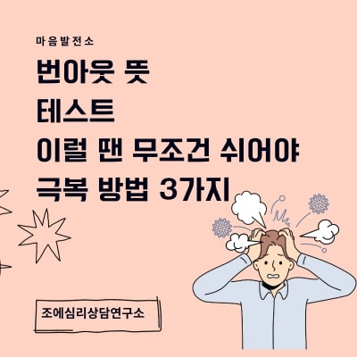
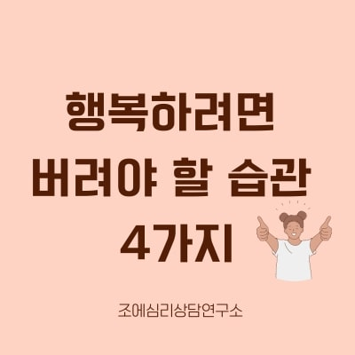
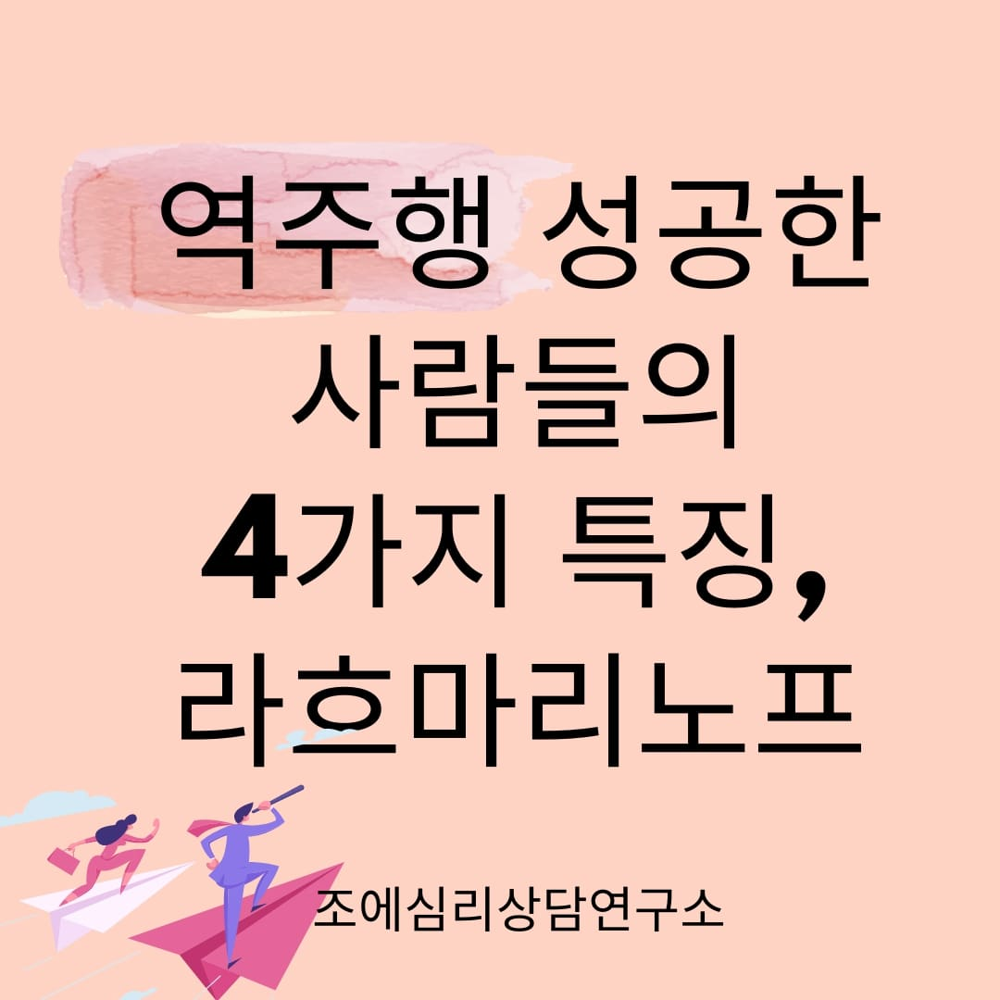
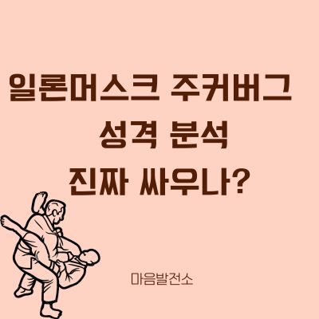

자필 상담후기
내담자들이 직접 손으로 작성한 진심이 담긴 상담 후기입니다. 상담을 통해 느낀 변화와 소감을 생생하게 확인하세요.

개인상담 후기 - "마음이 많이 편해졌어요"

부부상담 후기 - "서로를 이해하게 되었습니다"
청소년상담 후기 - "자신감을 되찾았어요"

심리검사 후기 - "나를 더 잘 알게 되었습니다"

화상상담 후기 - "편안한 환경에서 상담받을 수 있어 좋았어요"

개인상담 후기 - "새로운 시작을 할 수 있게 되었어요"

가족상담 후기 - "가족 관계가 많이 개선되었습니다"

진로상담 후기 - "앞으로의 방향을 찾을 수 있었어요"
상담 문의 및 예약
자필 후기처럼 진심이 담긴 상담을 받고 싶으시다면 언제든지 문의해주세요. 전문적이고 따뜻한 상담으로 도움을 드리겠습니다.